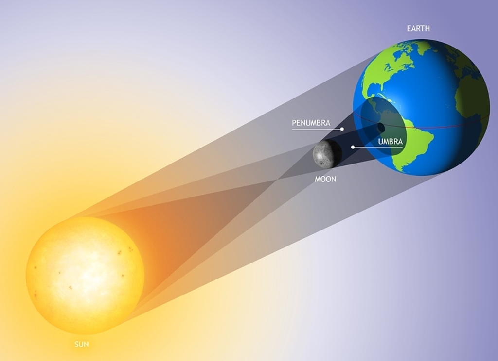
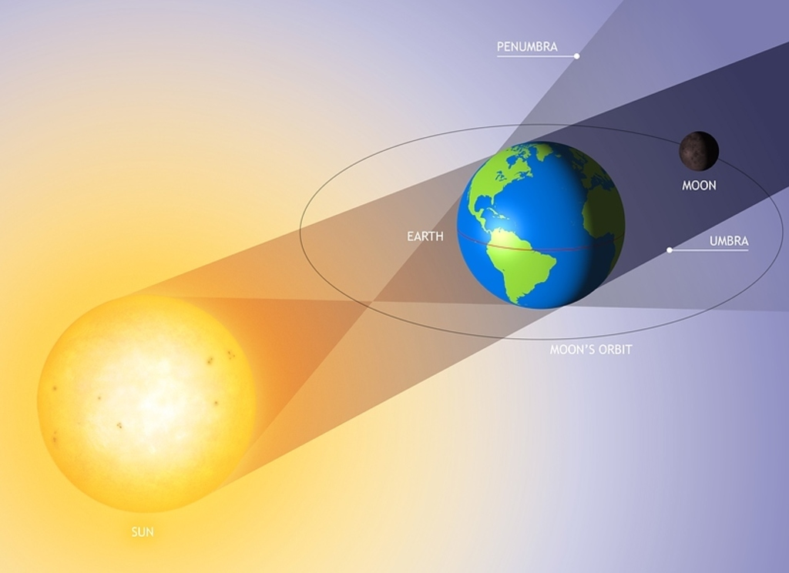

Long ago, solar eclipses weren't a topic of scientific discovery like they are today. In acneint times, they caused fear and uncertainity. The lack of light made people think the world was about to end.
Every country seems to have a different myth. For example, in places like Inida, China, Mongolia, Indonesia, Sibera, etc., it was believed that a demon swallowed the sun. However, some countries had a very different idea..
Some cultures thought there was some sort of romantic fight between the Sun and Moon! They saw the Sun and Moon uniting during eclipses to escape lonliness.
With modern technology, today we understand how these amazing phenomenons occur. An eclipse on Earth happens when the Sun, Moon and Earth all line up in a syzygy. The order in which they line up determines what they're classified as.
Solar Eclipses
Solar eclipses occur when the Moon travels between the Sun and Earth, casting a shadow on well. Well, we all know that the Moon and Sun are in two separate leagues regarding size. The Moon has no chance of winning that battle. The Moon is around 400 times smaller than the sun, but it's also 400 times closer to us. Yup, this means that the two celestial bodies look about the same size when looked at by the naked eye creating full solar eclipes. Eventually over time, the Moon may travel further away from the Earth and we won't experience the same phenomenon again.
A total solar eclipse is when the Sun is completely blocked by the Moon. It's called a partial eclipse when only a section of the Sun is blocked. Annular is when the Moon blocks the center, but leaves enough space for "a right of fire" around the edge from the Sun. It's hybrid when a solar eclipse can appear total in some areas and annular in others.
Solar eclipses only happen during the day and when the Moon is in the New Moon phase. This is because of the alignemnt between the Moon and Earth and how its shadow falls.
Lunar Eclipses
Lunar eclipses occur when the Earth passes in between the Sun and Moon. They happen during the eclipse seasons, which repeats every 6 months.
